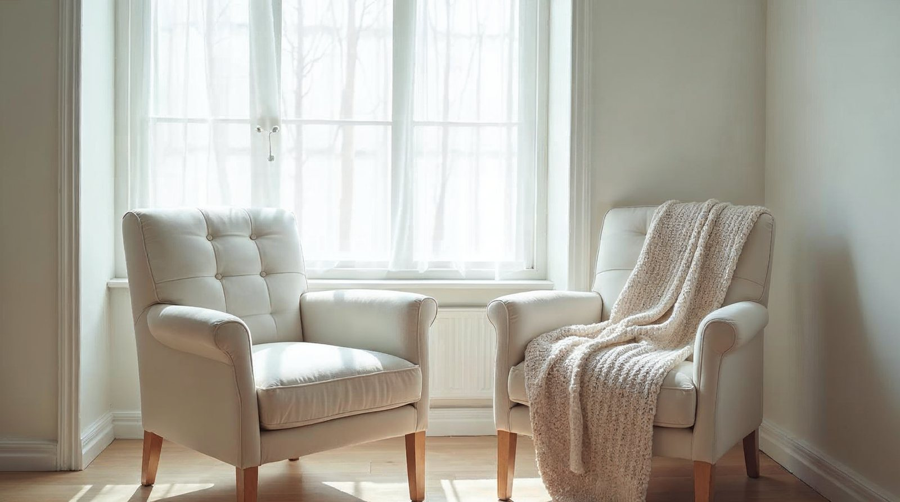
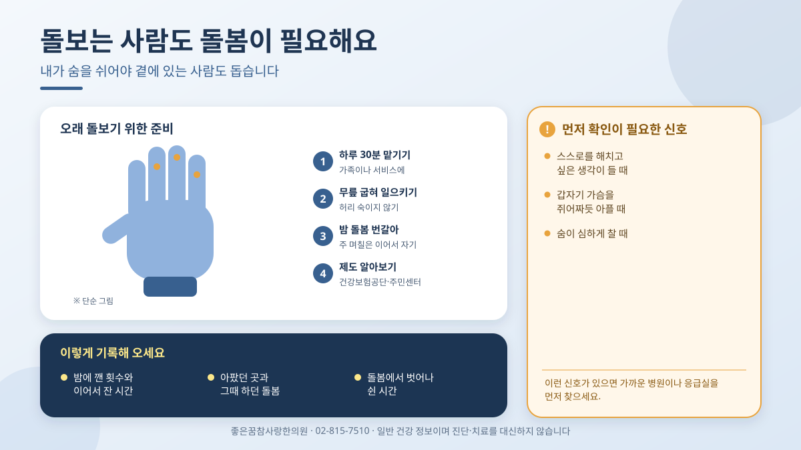

이종호 한의사 감수좋은꿈참사랑한의원 대표원장 (한의사 면허번호 19769)발행 2026-11-26 · 수정 2026-11-26
이 글의 차례
새벽 세 시, 옆방에서 기침 소리가 들립니다. 몸이 먼저 일어나 물컵을 들고 갑니다. 이불을 다시 덮어 드리고 돌아와 누우면 잠이 오지 않습니다. 아침이 되면 약을 챙기고, 식사를 차리고, 병원 예약을 확인합니다. 그렇게 하루가 지나가고, 내 끼니는 늘 서서 대충 때웁니다.
부모님이나 배우자, 아픈 가족을 오래 돌보는 분들이 진료실에 오시면 대개 허리나 어깨가 아파서 오셨다고 말씀하십니다. 그런데 이야기를 나누다 보면 허리보다 더 깊은 곳이 지쳐 있는 경우가 많습니다. 잠을 못 잔 지 오래되었고, 혼자 울어 본 적도 있다고 조용히 털어놓으십니다.
돌봄은 사랑과 책임으로 시작하지만, 그 시간이 길어지면 돌보는 사람의 몸과 마음이 먼저 닳아 갑니다. 이것은 약해서가 아니라 오래 애써 온 사람에게 자연스럽게 찾아오는 일입니다. 저는 이런 상태를 흔히 돌봄 번아웃이라고 부릅니다.
돌보는 사람이 무너지면 돌봄도 함께 흔들립니다. 그래서 돌보는 분 자신을 챙기는 일은 이기적인 것이 아니라 돌봄을 오래 이어 가기 위한 준비입니다. 오늘 글에서는 돌봄 번아웃이 어떤 모습으로 오는지, 그리고 돌보는 사람이 먼저 숨 돌릴 틈을 어떻게 만들 수 있는지를 정리해 보겠습니다.
돌봄 번아웃은 어떤 모습으로 오나요
돌봄 번아웃은 몸과 마음 양쪽에서 함께 나타납니다. 처음에는 피곤하다는 정도로 느끼다가, 어느 순간 '이대로는 못 버티겠다'는 생각이 불쑥 올라옵니다. 진료실에서 자주 듣는 모습은 이렇습니다.
- 잠을 자도 개운하지 않고, 작은 소리에도 깬다
- 허리, 어깨, 손목, 무릎이 늘 뻐근하고 아프다
- 끼니를 거르거나 서서 급하게 먹는 날이 많다
- 돌보는 가족에게 짜증이 났다가 곧 죄책감이 밀려온다
- 친구를 만나거나 취미를 즐기는 일이 사라졌다
- 앞으로 얼마나 더 해야 하나 하는 막막함이 자주 든다
이 가운데 여러 가지가 몇 주 넘게 이어진다면 돌보는 분 자신도 돌봄이 필요한 상태일 수 있습니다. 그 신호를 외면하지 않는 것이 첫걸음입니다.
왜 돌봄은 이렇게 깊이 지치게 할까요
돌봄의 피로는 몸의 노동, 끊긴 잠, 끝이 보이지 않는 긴장이 한꺼번에 겹치면서 생깁니다. 환자를 일으키고 옮기고 씻기는 일은 허리와 어깨에 큰 부담을 주고, 밤 돌봄이 이어지면 몸이 회복할 시간이 사라집니다.
마음의 무게는 더 큽니다. 가족이 아프다는 슬픔, 상태가 나빠질지 모른다는 걱정, 병원비와 일상의 일, 다른 가족과의 역할 갈등까지 함께 짊어지게 됩니다. 언제 무슨 일이 생길지 몰라 늘 긴장한 채로 대기하는 상태가 오래 이어집니다.
죄책감도 돌보는 분을 지치게 합니다. 쉬고 싶다는 생각이 들면 미안하고, 짜증을 내고 나면 자책하고, 잠깐 외출해도 마음이 편하지 않습니다. 이 마음은 돌봄을 잘하고 싶은 마음에서 나오지만, 쉬어야 할 때도 쉬지 못하게 만듭니다.
한의학에서는 이런 상태를 오래 애쓰며 기운과 혈을 쓰기만 하고 채우지 못한 모습, 혹은 걱정과 긴장이 가슴에 맺힌 모습으로 설명하기도 합니다. 진단명이 아니라 진찰할 때 몸의 경향을 살피는 전통적인 표현으로 이해해 주시면 됩니다.
돌보는 분의 몸에 자주 생기는 불편
돌봄을 오래 하신 분들의 몸에는 비슷한 흔적이 남습니다. 가장 흔한 것은 허리입니다. 침대 높이가 낮은데 허리를 숙인 채 환자를 일으키거나 기저귀를 갈다 보면 허리 아래쪽이 묵직해지고, 어느 날 삐끗하기도 합니다.
어깨와 손목도 자주 아픕니다. 부축하거나 휠체어를 밀 때 팔에 힘이 많이 들어가고, 손목을 꺾은 채 무게를 받치는 일이 반복됩니다. 무릎을 꿇거나 쪼그려 앉는 일이 잦아 무릎이 시큰하다는 분도 계십니다.
몸의 통증 말고도 소화가 더디고 입맛이 없거나, 가슴이 답답하고 두근거리거나, 머리가 무겁고 멍한 느낌이 이어지는 분이 많습니다. 생리 주기가 흐트러지거나 갱년기 증상이 더 심해졌다는 분도 계십니다.
돌봄의 시기마다 어려움이 다릅니다
돌봄을 막 시작한 시기에는 모든 것이 낯섭니다. 진단을 받은 충격이 채 가시기 전에 병원 일정, 약 관리, 식사 준비를 한꺼번에 익혀야 합니다. 이 시기에는 몸보다 마음이 먼저 지치는 경우가 많습니다.
돌봄이 몇 달, 몇 년 이어지면 익숙해지는 대신 피로가 바닥에 쌓입니다. 처음의 긴장은 줄었지만 나의 일상과 관계가 조금씩 사라져 가고, 돌봄 말고는 아무것도 남지 않은 것 같은 허전함이 찾아옵니다.
가족의 상태가 갑자기 나빠지거나 입원과 퇴원을 반복하는 시기에는 다시 큰 긴장이 밀려옵니다. 병실 보호자 침대에서 잠을 설치며 며칠을 보내고 나면 몸이 크게 무너지기도 합니다. 이런 고비마다 다른 가족이 잠시라도 교대해 주는 것이 큰 힘이 됩니다.
돌봄 번아웃과 우울은 어떻게 다를까요
돌봄 번아웃은 지친 상태가 중심에 있습니다. 하루라도 누군가 대신 돌봐 주어 푹 쉬고 나면 조금 기운이 돌아오는 정도라면 소진에 가깝습니다. 쉴 수 있는 틈을 만들어 주는 것만으로도 꽤 달라질 수 있습니다.
반면 쉬어도 기분이 나아지지 않고, 두 주 넘게 거의 매일 마음이 가라앉으며, 좋아하던 일에 흥미가 사라지고 잠과 입맛이 함께 무너졌다면 우울감이 깊어진 상태일 수 있습니다. 이런 경우에는 정신건강의학과 상담을 함께 받아 보시길 권합니다.
돌봄이 끝난 뒤에 지침이 한꺼번에 밀려오는 분도 계십니다. 가족을 떠나보냈거나 시설로 모신 뒤, 긴장이 풀리면서 몸살처럼 아프고 허탈함이 길어지기도 합니다. 이 시기의 마음과 몸도 충분히 돌봄이 필요한 때이니 혼자 견디지 마세요.
스스로 점검해 보기
아래 질문으로 지금 나의 상태를 들여다보세요. 정답이 있는 질문은 아닙니다.
- 지난 일주일 동안 돌봄에서 벗어나 쉬어 본 시간이 있나요?
- 밤에 깨지 않고 이어서 잔 날이 며칠이었나요?
- 내 건강검진이나 진료를 미뤄 두고 있지는 않나요?
- 힘들다고 털어놓을 수 있는 사람이 있나요?
- 돌봄을 나눌 수 있는 가족이나 서비스를 알아본 적이 있나요?
먼저 이렇게 여쭙니다
돌보는 분의 이야기를 듣는 것이 진료의 시작입니다. 이야기하다 보면 그동안 미뤄 둔 몸의 불편이 하나둘 떠오르기도 합니다. 편하게 말씀해 주세요.
처음 오시면 저는 대략 이런 순서로 여쭙니다. 미리 생각해 오시면 이야기가 훨씬 수월해집니다.
- 누구를, 얼마나 오래, 하루 몇 시간 정도 돌보고 계신가요?
- 밤에 일어나 돌보는 일이 있나요? 몇 번 정도인가요?
- 환자를 옮기거나 부축하는 일이 많은가요?
- 끼니와 잠은 어떻게 챙기고 계신가요?
- 돌보는 분 자신이 앓고 있는 질환이나 드시는 약이 있나요?
- 지금 가장 힘든 것은 몸인가요, 마음인가요?
일상에서 먼저 해 볼 수 있는 것
돌봄을 하면서 나를 챙기는 일은 큰 결심보다 작은 틈을 만드는 데서 시작합니다. 아래 가운데 지금 할 수 있는 것 하나부터 골라 보세요.
- 하루 30분이라도 다른 가족이나 서비스에 맡기고 밖에 나가기
- 내 끼니를 정해진 시각에 앉아서 먹기
- 환자를 일으킬 때는 허리를 숙이지 말고 무릎을 굽혀 몸 가까이에서 들기
- 침대 높이를 조절하거나 보조 도구를 이용해 허리 부담 줄이기
- 밤 돌봄을 가족과 번갈아 맡아 일주일에 며칠은 이어서 자기
- 같은 처지의 보호자 모임이나 상담 창구에 한 번 연락해 보기
장기요양보험의 방문 요양, 주야간 보호, 단기 보호 같은 제도를 알아보는 것도 큰 도움이 됩니다. 이용할 수 있는지는 국민건강보험공단이나 주민센터에 문의해 보세요. 혼자 다 해야 한다는 생각을 내려놓는 것이 오래 돌보는 힘이 됩니다.
형제나 다른 가족과 역할을 나눌 때는 감정보다 구체적인 일로 이야기하는 편이 수월합니다. 병원 동행, 주말 돌봄, 장보기, 서류 정리처럼 일을 나눠 적어 두고 맡을 사람을 정하면 서운함이 줄어듭니다.
오늘 해야 할 돌봄 가운데 꼭 내가 해야 하는 일과 다른 사람이 해도 되는 일을 나눠 적어 보세요. 생각보다 맡길 수 있는 일이 많다는 것을 알게 되는 분이 많습니다. 반찬 배달이나 장보기 배송처럼 작은 도움을 쓰는 것도 부끄러운 일이 아닙니다.
쉬는 것에 대한 죄책감 내려놓기
많은 보호자분이 잠깐 쉬는 것조차 미안해하십니다. 그런데 비행기에서도 산소마스크는 보호자가 먼저 쓰라고 안내합니다. 내가 숨을 쉬어야 곁에 있는 사람도 도울 수 있기 때문입니다.
쉬는 시간에 무엇을 해야 한다는 부담도 내려놓으세요. 카페에 앉아 창밖을 보는 것, 동네를 한 바퀴 걷는 것, 아무것도 하지 않고 누워 있는 것 모두 충분한 쉼입니다. 그 시간이 다시 돌아갈 힘을 채워 줍니다.
돌보는 가족에게 짜증이 났다면 그것은 내가 나쁜 사람이라서가 아니라 지쳐 있다는 신호입니다. 그런 날은 스스로를 탓하기보다 그날 밤 조금 더 일찍 쉬는 쪽을 고르시길 권합니다.
내 건강도 함께 챙기기
돌봄을 하다 보면 가족의 진료 일정은 빈틈없이 챙기면서 내 건강검진은 몇 년째 미뤄 두는 일이 흔합니다. 하지만 돌보는 분이 갑자기 아프면 돌봄 전체가 멈춥니다. 내 검진과 진료 날짜도 가족의 일정표에 함께 적어 두세요.
혈압이나 혈당, 관절 질환처럼 원래 관리하던 질환이 있다면 돌봄 기간에 더 흔들리기 쉽습니다. 내 약을 거르지 않도록 알람을 맞춰 두고, 정기 진료도 가능한 한 이어 가시길 권합니다.
짧게라도 몸을 움직이는 시간을 만들어 보세요. 가족이 잠든 사이 집 안에서 어깨와 허리를 천천히 펴 주는 스트레칭, 장을 보러 가는 길에 조금 돌아서 걷는 것만으로도 굳었던 몸과 마음이 한결 풀립니다.
한의원에서 함께 살필 수 있는 경우
- 환자를 옮기고 부축하며 허리, 어깨, 손목, 무릎이 아픈 경우
- 밤 돌봄으로 잠이 끊기고 낮에도 머리가 무거운 경우
- 가슴이 답답하고 두근거리며 작은 일에 마음이 크게 흔들리는 경우
- 입맛이 없고 소화가 더디며 체중이 줄어드는 경우
- 쉬어도 피로가 풀리지 않고 몸이 늘 무거운 경우
좋은꿈참사랑한의원에 오시면 모든 분의 맥을 먼저 짚고, 아픈 자리를 직접 만져 보며, 잠과 소화, 마음의 상태를 함께 여쭙니다.
진찰한 내용을 바탕으로 생활에서 덜어 낼 것 하나와 함께 침, 추나, 한약 상담 가운데 지금 상태에 맞는 것을 정합니다. 한약을 상의할 때는 드시는 약을 모두 확인하고 신중하게 정합니다. 처방받은 약은 상의 없이 멈추지 않습니다.
돌봄 일정 때문에 오래 자리를 비우기 어려우시다면 방문 전에 전화로 진료 시간을 여쭤 주세요. 짧은 시간이라도 내 몸을 돌보는 시간이 되도록 함께 맞춰 보겠습니다.
이렇게 기록해 오시면 상담이 쉬워집니다
2주 정도만 짧게 적어 보세요. 돌보는 가족의 기록을 챙기듯 내 기록도 함께 챙겨 주세요.
- 밤에 깬 횟수와 이어서 잔 가장 긴 시간
- 내가 앉아서 먹은 끼니 수
- 아팠던 곳과 그때 하던 돌봄
- 돌봄에서 벗어나 쉰 시간
- 마음이 크게 흔들렸던 날과 그날 있었던 일
기록을 나란히 보면 유난히 힘든 요일이나 돌봄이 보이기 시작합니다. 그 자리부터 다른 가족이나 서비스의 도움을 먼저 받을 방법을 찾는 것이 다음 걸음이 됩니다. 기록은 가족끼리 역할을 나눌 때도 좋은 이야기 재료가 됩니다.

오래 곁에 있기 위해
돌봄은 짧은 달리기가 아니라 긴 걸음입니다. 오래 함께 걷기 위해서는 중간중간 쉬어 가는 것이 꼭 필요합니다. 지금까지 애써 오신 것만으로도 충분히 큰일을 하고 계신 겁니다.
이번 주에는 나만을 위한 30분 하나만 정해 보세요. 다음에 오시면 그 30분이 어땠는지, 그리고 아픈 곳이 어떤지부터 함께 살펴보겠습니다.
이런 증상은 먼저 확인이 필요합니다
- 스스로를 해치고 싶은 생각이 들거나 모든 것을 끝내고 싶다는 마음이 드는 경우
- 갑자기 가슴을 쥐어짜는 통증이나 숨이 심하게 차는 느낌이 있는 경우
이런 신호가 있으면 한의원보다 가까운 병원이나 응급실을 먼저 찾으세요.
마음이 많이 힘들 때는 자살예방상담전화 ☎ 109에서 언제든 이야기를 나눌 수 있습니다.
함께 읽으면 좋은 글
- 아픈 가족을 오래 돌보며 몸과 마음이 지쳤을 때는 어떻게 하나요?
- 환자를 옮기고 돌보는 일을 하면 허리가 뻐근한 것은 어떻게 살피나요?
- 어르신이 말수가 줄고 외로움과 우울이 길어질 때, 가족은 무엇을 살피면 좋을까요?
- 기분이 2주 넘게 가라앉고 잠·입맛·흥미가 떨어질 때는 어떻게 살피나요?
- 충분히 쉬어도 몸이 늘 피곤한 만성피로는 어떤 점을 살펴보나요?

여쭙는 것
- 누구를, 얼마나 오래, 하루 몇 시간 정도 돌보고 계신가요?
- 밤에 일어나 돌보는 일이 있나요? 몇 번 정도인가요?
- 환자를 옮기거나 부축하는 일이 많은가요?
생활에서 해 볼 것
- 하루 30분이라도 다른 가족이나 서비스에 맡기고 밖에 나가기
- 내 끼니를 정해진 시각에 앉아서 먹기
- 환자를 일으킬 때는 허리를 숙이지 말고 무릎을 굽혀 몸 가까이에서 들기
한의원에서 함께 살필 것
- 환자를 옮기고 부축하며 허리, 어깨, 손목, 무릎이 아픈 경우
- 밤 돌봄으로 잠이 끊기고 낮에도 머리가 무거운 경우
- 가슴이 답답하고 두근거리며 작은 일에 마음이 크게 흔들리는 경우
먼저 확인이 필요한 신호
- 스스로를 해치고 싶은 생각이 들거나 모든 것을 끝내고 싶다는 마음이 드는 경우
- 갑자기 가슴을 쥐어짜는 통증이나 숨이 심하게 차는 느낌이 있는 경우
한눈에 보는 표
| 구분 | 핵심 |
|---|---|
| 여쭙는 것 | 누구를, 얼마나 오래, 하루 몇 시간 정도 돌보고 계신가요? 밤에 일어나 돌보는 일이 있나요? 몇 번 정도인가요? |
| 생활에서 해 볼 것 | 하루 30분이라도 다른 가족이나 서비스에 맡기고 밖에 나가기 내 끼니를 정해진 시각에 앉아서 먹기 |
| 한의원에서 함께 살필 것 | 환자를 옮기고 부축하며 허리, 어깨, 손목, 무릎이 아픈 경우 밤 돌봄으로 잠이 끊기고 낮에도 머리가 무거운 경우 |
| 먼저 확인이 필요한 신호 | 스스로를 해치고 싶은 생각이 들거나 모든 것을 끝내고 싶다는 마음이 드는 경우 갑자기 가슴을 쥐어짜는 통증이나 숨이 심하게 차는 느낌이 있는 경우 |
자주 묻는 질문
돌보는 가족을 두고 제 진료를 받으러 가도 될까요?
돌보는 분이 건강해야 돌봄도 오래 이어 갈 수 있습니다. 방문 전에 전화로 진료 시간을 여쭤 주시면 짧은 시간이라도 맞춰 보겠습니다.
환자를 일으킬 때마다 허리가 아파요.
허리를 숙이기보다 무릎을 굽혀 환자 몸 가까이에서 일으키고, 침대 높이를 조절하거나 보조 도구를 쓰면 부담이 줄어듭니다. 아픈 자리는 진료실에서 직접 만져 보며 살펴봅니다.
쉬고 싶다는 생각이 들 때마다 죄책감이 들어요.
쉬고 싶은 마음은 지쳐 있다는 자연스러운 신호입니다. 내가 숨을 쉬어야 곁에 있는 사람도 도울 수 있으니, 쉬는 시간을 돌봄의 일부로 생각해 주세요.
돌봄을 도와주는 제도가 있나요?
장기요양보험의 방문 요양, 주야간 보호, 단기 보호 같은 제도가 있습니다. 이용할 수 있는지는 국민건강보험공단이나 주민센터에 문의해 보세요.
제가 먹는 약이 있는데 한약을 함께 먹어도 되나요?
드시는 약을 모두 확인하고 신중하게 정합니다. 약 봉투나 처방전 사진을 가져와 주시면 함께 살펴봅니다.
좋은꿈참사랑한의원은 재진 때 지난번 이야기부터 이어서 여쭙니다. 진료시간과 예약은 오시는 길에서 확인하세요.
어디서 상담받을 수 있나요?
좋은꿈참사랑한의원은 서울 동작구 만양로2길 2 신성빌딩 3층·5층(서울 동작구 상도동, 7호선 상도역 3번 출구 근처)에 있습니다. 한의사 3명(이종호 대표원장, 조영기 수석진료원장, 정원영 진료원장)이 진료합니다. 진료시간은 평일 09:30~20:00(점심 13:00~14:00), 토·일·공휴일 09:30~15:00이며, 방문 전 전화로 확인을 권합니다. 예약은 네이버 예약, 카카오톡 상담, 전화 02-815-7510로 받습니다.
이 글은 일반적인 건강 정보이며 개인의 진단이나 치료를 대신하지 않습니다. 증상이 있거나 복용 중인 약이 있다면 진료를 통해 확인하세요. 치료 효과는 개인마다 다를 수 있습니다.
작성 기준: 일반적으로 알려져 있는 건강 정보를 참고해 정리했습니다(대표원장 감수). 증상 기록은 1~2주 동안 하루 1회, 비슷한 시간에 적어 오시면 지난 상태와 비교하기 쉽습니다.